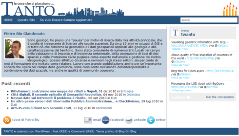

Domani (6 luglio), l’Autorità per le Comunicazioni (AgCom) voterà una delibera con cui si attribuirà il potere di oscurare siti internet stranieri e di rimuovere contenuti da quelli italiani, in modo del tutto arbitrario e bypassando di fatto l’autorizzazione della magistratura.
Anche TANTO dice no al bavaglio alla rete! Seguiamo insieme “La notte della rete”, una 4 ore no-stop in cui si alterneranno cittadini e associazioni in difesa del web, politici, giornalisti, cantanti, esperti. L’evento sarà in diretta streaming a partire dalle 17:30. L’hashtag Twitter è #notterete.
Tutti noi crediamo che il diritto di autore vada rispettato e tutelato come parte integrante della persona e del diritto di espressione.
Proprio in relazione a tali valori non può essere accettato né il principio, né il modus operandi della detta delibera che, lungi dal tutelare veramente il diritto di autore, mina seriamente, dal punto di vista sostanziale e dal punto di vista formale, i diritti inviolabili dell’individuo.
Di seguito, per chi volesse farsi una idea sulla questione, vi segnaliamo i seguenti link:
Tra le cose che mi piacciono, la cartografia e le biciclette occupano un posto importante. Questo simpatico video del britannico Ordnance Survey le mette assieme per illustrare i vantaggi delle mappe della linea OS Select. Si tratta di prodotti a stampa di scala e taglio standard, centrati su un punto indicato da chi acquista. L’idea ed il video hanno già qualche anno.
A quando qualcosa del genere in Italia?
La nostra società nel 2030. Uno studio per indicarci come sarà: se sapremo conquistarcelo. Rubo un titolo, nelle conclusioni si capirà perché.
Ho ricevuto recentemente la segnalazione di questo rapporto: Envisioning Digital Europe 2030: Scenarios for ICT in Future Governance and Policy Modelling. E’ un documento che riporta i risultati della ricerca svolta dall’Unità “Information Society” dell’Institute for Prospective Technological Studies del JRC, lavoro svolto nell’ambito del progetto CROSSROAD, A Participative Roadmap on ICT research on Electronic Governance and Policy Modelling.
“Forse non tutti sanno che…” con Governance and Policy Modelling il Settimo Programma Quadro della Commissione Europea per la R&S nel settore ICT ha voluto sollecitare l’esecuzione di progetti di ricerca in due campi complementari. E’ assai prevedibile –si legge nel Work Programme 2009-2010- che gli strumenti per la collaborazione on-line in futuro consentiranno a una percentuale ampia della popolazione di esprimere simultaneamente opinioni e punti di vista su problemi sociali (grandi o piccoli). Mentre tale scenario è già immaginabile, non esistono ancora modelli di governance,process flows e tool di analisi appropriati per comprendere, interpretare, rappresentare e valorizzare quelle forme di partecipazione collettiva al bene pubblico. Lo sviluppo di strumenti che abbraccino entrambi questi ambiti dell’ICT può contribuire a migliorare il processo decisionale pubblico, far sì che le politiche siano più efficaci, la governance più intelligente, anche grazie alle possibilità di arricchire continuamente le competenze, attraverso un apprendimento continuo nel corso dei processi di applicazione delle politiche stesse.
L’obiettivo generale di CROSSROAD ha riguardato quindi l’identificazione di tecnologie emergenti, di nuovi modelli di governance e di scenari di applicazione innovativi nel campo dell’ICT per la governance e la policy modelling. Gli scopi di questa ricerca sono riferibili all’Agenda digitale per l’Europa, l’iniziativa di punta della strategia UE 2020. Il progetto ha voluto fornire ai decisori politici impegnati nell’attuazione dell’Agenda uno strumento di consultazione, utile anche per contribuire alla definizione di una roadmap della ricerca ICT che vada oltre lo stato dell’arte e sia condivisa dalla comunità dei ricercatori e dalle comunità di pratica.
Per stimolarci a curiosare in un nostro futuro, non lontano, soprattutto su cui possiamo agire, gli autori c’invitano a riflettere, ci ricordano che quanto oggi è realtà poteva sembrare frutto di fantasia quando nasceva internet; di più:
“Se uno avesse previsto poi che, nel 2010, i bambini avrebbero potuto accedere liberamente alle immagini satellitari di ogni luogo della Terra, interagire con persone di tutto il mondo e effettuare ricerche tra trilioni di dati con un semplice click sul loro PC, sarebbe stato preso per pazzo” (pag. 9).
Ecco, di creativa follia mi sembra pervaso questo documento. Esso presenta una visione dell’Europa Digitale tra vent’anni, di una società in cui le Tecnologie per l’Informazione e la Comunicazione a supporto della governance e delle politiche potranno avere un ruolo rilevante e positivo. Evidenzia le principali linee di ricerca nel settore dell’ICT che dovranno essere guardate con attenzione e con quali modalità dovranno essere sviluppate per costruire una Europa Digitale aperta, innovativa e inclusiva nel 2030. Mostra anche come fronteggiare i rischi che potrebbero derivare da un uso improprio dell’ICT in quest’ambito.
Opportunità e minacce evidenziate attraverso quattro differenti scenari, riguardanti quella che potrà essere la società in cui vivranno i cittadini europei nel 2030, individuati seguendo una rappresentazione schematica rispetto a due variabili, ossia quale potrebbe essere:
il sistema di valori sociali esistente, vale a dire più inclusivo, aperto e trasparente oppure esclusivo, fratturato e restrittivo,
la risposta all’impiego delle tecniche di policy intelligence (parziale o completa; proattiva o reattiva), cioè come verranno utilizzati (e da quali soggetti) gli strumenti -abilitati dall’ICT- per l’elaborazione dei dati, la modellazione, la visualizzazione e la simulazione a supporto di strategie politiche pubbliche basate su valutazioni il più possibile razionali e critiche (evidence-based).
I quattro scenari individuati e analizzati in CROSSROAD sono graficamente indicati attraverso gli assi cartesiani del diagramma riportato qui a fianco. Spero di avervi incuriosito e avervi indotto almeno a una rapida lettura del rapporto. Sembrerebbe che lo scenario “Open Governance” sia da preferire, ma anch’esso presenta delle criticità, come riportato nella tabella di pag. 59.
La società reale europea nel 2030 non corrisponderà quindi a nessuno dei quattro scenari, così come sono stati descritti. Grazie però a questo esercizio, CROSSROAD ha elaborato una visione dell’Europa digitale tra vent’anni, proposta nel documento come una società in cui l’ICT per la governance e la policy modelling potrebbe giocare un ruolo positivo importante.
Penso che il capitolo di maggiore interesse per la Comunità Geomatica possa essere quello conclusivo. E’ la sezione del rapporto in cui, dopo aver chiarito quali saranno le principali problematiche che dovranno essere affrontate nei prossimi vent’anni nell’elaborazione e attuazione delle politiche pubbliche, sono esposti alcuni possibili indirizzi della ricerca nel settore dell’ICT per la governance e la policy modelling: ricerche che siano utili per orientare la società europea verso scenari auspicabili, evitando quelli meno desiderabili.
Un primo ambito dell’ICT su cui indirizzare la ricerca riguarda le tecnologie e le applicazioni per la gestione e l’analisi delle informazioni, per monitorare e simulare in tempo reale il comportamento di entità reali e virtuali (persone, cose, dati e informazioni). Gli autori ci ricordano che alcune compagnie di assicurazioni, avvalendosi di tali tecnologie, propongono ai propri clienti l’installazione a bordo delle auto di apparati che consentono poi di stabilire premi assicurativi basati sul comportamento del guidatore, piuttosto che sulla sua età, o sul suo sesso oppure ancora, la residenza. E’ plausibile -e auspicabile- che soluzioni analoghe siano adottate in altri domini, ad esempio legate alle politiche di assistenza sociale, dei trasporti, dell’energia, o altre ancora. Il settore pubblico potrebbe utilizzare questi strumenti per esaminare scelte differenti, in base al comportamento simulato o all’individuazione dei desideri d’individui, gruppi o della società nel suo insieme. Essi potrebbero quindi aiutare nella comprensione dei possibili risultati delle proposte politiche e dell’attuazione di alternative.
Un secondo campo della ricerca dovrebbe porre l’attenzione sulla crescente fruibilità di dati derivanti dall’enorme uso di sensori miniaturizzati e cablati in strutture fisiche (strade, case, ecc.). Quando tale disponibilità d’informazione sia abbinata a modalità di visualizzazione evolute, essa può avere sui decisori un impatto incredibile sulla percezione tempestiva dell’evoluzione di fenomeni d’interesse. Alcune applicazioni per incrementare la comprensione di situazioni in tempo reale, abbinate a tecniche di visualizzazione dei dati raccolti sono già utilizzate nel campo della logistica, per intervenire sulle rotte di trasporto delle merci, evitare –ad esempio- situazioni di congestione e quindi ridurre i costi di consegna. In conclusione, il rapporto raccomanda lo sviluppo di ricerche che –attraverso queste tecnologie- mirino a sfruttare l’enorme patrimonio di dati e fonti di conoscenze collettive del settore pubblico europeo.
Un terzo filone delle ricerche ICT nel campo della Governance and Policy modelling dovrebbe essere rivolto verso la crescente capacità di internet nel sostenere processi decisionali e pianificatori sempre più complessi e più a lungo termine. Il rapporto evidenzia che a questo fenomeno corrisponde la crescita di requisiti tecnologici connessi alle enormi risorse di archiviazione e elaborazione, associate ai sistemi software evoluti per la visualizzazione grafica delle analisi dei dati. Sono riportati due esempi riguardanti settori in cui queste potenzialità sono materia di ricerca. Il primo si riferisce ai possibili miglioramenti delle attività estrattive degli idrocarburi, grazie all’impiego di vaste reti di sensori, diffuse capillarmente nella crosta terrestre. L’altro pone l’accento sui benefici del monitoraggio dei parametri salienti di malati cronici, mentre questi continuano a condurre la loro vita normale: ciò può consentire ai medici di diagnosticare l’insorgere di situazioni critiche prima che queste s’aggravino.
In tale ambito, definito Policy intelligence and ICT-driven decision analytics, dovrebbero essere promosse ricerche riguardanti il web semantico, così come l’ottimizzazione degli strumenti ICT che agevolino la traduzione automatica, la modellazione dei processi, il data mining, la pattern recognition, le simulazioni basate sulla Teoria dei Giochi, gli strumenti di forecasting e back-casting, le tecniche di ottimizzazione goal-based.
La quarta traccia risultante dallo studio effettuato in CROSSROAD, definita come Automated mass collaboration platforms and real-time opinion visualization, rivolge l’attenzione sugli strumenti e le tecnologie ICT basate ed estrapolate dalla social computing e altre tecnologie future per la collaborazione in rete. Le ricerche in quest’ambito dell’ICT dovranno riguardare -ad esempio- strumenti che consentano di condividere informazioni e conoscenze, superando gli ostacoli dovuti a culture e a lingue diverse. Per favorire la partecipazione dei cittadini ai processi decisionali dovranno essere disponibili strumenti in grado di assicurare la capacità di monitorare l’intero processo del settore pubblico e controllare se, e come, i contributi proposti sono stati poi considerati. Processi che –grazie a queste tecnologie- potranno anche fare riferimento a modelli di governance collaborativi, strutturalmente e organizzativamente innovativi, in grado di consentire a gruppi d’interesse di formarsi, creare e aggregare informazione; imparare e condividere la conoscenza di gruppo accumulata, tenendone traccia. Tale complessità d’interazione tra singoli e gruppi –anche nella realtà virtuale- dovrà essere supportata da strumenti in grado di assicurare la gestione delle identità (anche multiple, pseudonimi, ecc.), la privacy, prevenire frodi, accessi non autorizzati,ecc.: insomma tenere conto dei requisiti necessari perché chi usa questi strumenti avverta fiducia in essi, ma nello stesso tempo sia orientato verso un loro uso responsabile.
Il quinto filone, denominato ICT-enabled data and process optimisation and control, prende spunto dalla possibilità di convertire dati (e analisi sui dati stessi) in istruzioni che -attraverso reti di attuatori- provvedono a modificare i processi. Come i sistemi che regolano i sistemi complessi rendono in molti casi superfluo l’intervento umano, si ipotizza che si possa aumentare l’efficienza e l’efficacia dei processi di governance e dei servizi rilasciati seguendo questa linea di sviluppo dell’ICT. Ciò avverrà ad esempio in maniera sempre più capillare nell’ambito della distribuzione di risorse energetiche o dell’acqua, attraverso l’installazione di contatori “smart” che mostreranno agli utenti in tempo reale l’andamento dei consumi e i relativi costi, consentendo una gestione dei prezzi più dinamica e orientando l’utilizzo consapevole di tali preziose risorse.
Infine, l’ultimo ambito dell’ICT verso cui le ricerche dovrebbero rivolgersi riguarda le applicazioni per la rilevazione di condizioni imprevedibili e l’attuazione di risposte immediate, tramite sistemi automatizzati che riproducono le reazioni umane, anche con livelli di prestazione notevolmente migliori. Tecnologie che si riferiscono a questo campo della ricerca, denominato Complex dynamic societal modelling systems, sono già applicate, ad esempio, dall’’industria automobilistica per lo sviluppo di sistemi in grado di rilevare il pericolo di collisioni imminenti e di evitare l’impatto. Alcune aziende ed enti di ricerca stanno sperimentando “piloti automatici” per i veicoli in rete, guidati in schemi coordinati a velocità autostradale. In altri settori si stanno testando sciami di robot in grado di manutenere strutture o ripulire ambienti da rifiuti tossici. Tutte questi sforzi hanno l’obiettivo di migliorare la sicurezza, ridurre rischi e costi. Mentre leggevo questo documento sono finito qua (giusto per non citare la solita Google car). Il rapporto evidenzia che alcune di queste tecnologie saranno già mature nei prossimi anni e potranno essere quindi utilizzate anche per applicazioni nell’ambito della governance e della creazione delle politiche pubbliche.
Le tecnologie, le discipline e quindi le competenze del mondo ICT coinvolte in questa prima roadmap sono veramente diverse e complesse. Come gli autori precisano, essa non rappresenta neppure un quadro esaustivo: quanto sia vasto il dominio della Governance e Policy Modelling si comprende sfogliando le pagine della sezione “Tassonomia” in Gov2Pedia, prezioso strumento per orientarsi in tale universo.
La lettura di questo rapporto aiuta a scoprire cosa c’è dietro (e anche oltre) la Digital Agenda for Europe. Per esempio, mi ha aiutato a comprendere meglio il commento di David Osimo al recente (15 dicembre scorso) European eGovernment Action Plan 2011-2015 (dalla stessa pagina si può accedere alla versione in italiano), piano per lo sviluppo di servizi digitali per gli europei, secondo concezioni innovative e a supporto della Digital Agenda.
Sì, va be’, e la Geographic Information? Non sarà sfuggita un’evocazione leggendo già le prime righe (le immagini satellitari accessibili liberamente anche ai bambini). Nel seguito, l’ho rinvenuta “incorporata” negli applicativi e nei servizi che potranno essere resi disponibili per tutte le aree dell’ICT segnalate come promettenti per la governance e la policy modelling.
Ciò che ora mi piacerebbe leggere, sarebbe un esame del posizionamento della Geoscience rispetto alla visione della Digital Europe nel 2030 proposta in questo documento, un’indagine sui contributi specifici della Geographic Information rispetto agl’indirizzi della ricerca nel settore dell’ICT illustrati nel rapporto. M’interesserebbe anche un approfondimento dei riflessi eventuali di tale visione sugli sviluppi del nostro settore (in risposta a nuovi requisiti, circa aspettative degli utenti, …). Quest’ultimo forse potrebbe essere utile per segnalare ulteriori idee per la ricerca, orientare le strategie per l’implementazione dei servizi, rendere anche più consapevole il nostro lavoro quotidiano.
Nel più recente Programma di Lavoro 2011-2012 del 7° Programma Quadro il tema governance e policy modelling è stato riproposto, sollecitando contributi che aiutino a affrontare “scenari futuri che coinvolgono complessità ancora maggiori e il coinvolgimento dei cittadini, in particolare rispondere alle esigenze delle giovani generazioni”. Può essere un’altra opportunità (il bando si è chiuso lo scorso 18 gennaio) per creare occasioni di dialogo tra il mondo dell’ICT nella sua globalità e il “regno” della GI, i cui confini si stanno dilatando (giusto qui una suggestione per l’urban planning policy, citato nel Work Programme 2011-2012). Potremo comprendere meglio in che modo la Geographic Information sia necessaria per implementare molte soluzioni per tale tema. Ma anche, per il presente, come seguire (e favorire) l’attuazione dell’eGovernmentAction Plan anche “nel regno della GI”.
Parafrasando la raccomandazione assai condivisibile di Osimo ai nostri concittadini a Bruxelles “siate ambasciatori delle istanze italiane in Europa e siate disseminatori delle innovazioni europee in Italia”, vale anche un “presentiamo le istanze dell’Informazione Geografica italiane nel contesto dell’Agenda Digitale e siamo disseminatori delle innovazioni digitali nel nostro campo”. Sia in Europa, sia all’interno di una strategia digitale italiana, http://www.agendadigitale.org/.
Il diagramma degli scenari dell’Europa Digitale nel 2030 mi ha ricordato un altro grafico. Lo storico C.M. Cipolla (1922 -2000) nel suo Allegro ma non troppo, proponeva un diagramma per classificare gl’individui in base al loro comportamento. Suggerì di assegnare all’asse delle ascisse la misura dei danni o dei vantaggi che l’individuo procura a sé stesso (vantaggio positivo, danno negativo); mentre indicò che i danni o i vantaggi procurati agli altri fossero assegnati all’asse delle ordinate. Propose di chiamare l’insieme degli individui le cui azioni inducono valori positivi per entrambi tali parametri, come Intelligenti.
La materia è quella della tutela della privacy in ambito lavorativo: in sostanza, si tratta di stabilire quanto e a quali condizioni si possa spingere l’autonomia organizzativa del datore di lavoro quando vengono coinvolti i diritti primari del lavoratore.
Sempre più spesso l’esigenza di ottimizzare il lavoro aziendale spinge l’imprenditore a far uso di tutte quelle tecnologie che consentono di monitorare in tempo reale la dislocazione dei propri mezzi e dei dipendenti sul territorio. D’altro canto tali esigenze non possono violare i diritti inviolabili del lavoratore, il quale, nell’espletamento degli incarichi affidati, ha il pieno diritto a non veder violata la propria privacy.
In tal senso, nel presente articolo ci è sembrato utile e opportuno, non solo illustrare il caso concreto sottoposto all’Autorià Garante per la tutela dei dati personali, ma anche inserire in calce un piccolo vademecum degli adempimenti da rispettare.
Ci sia consentita un’ultima notazione di carattere generale (per altro di estrema attualità): al di là del rispetto formale della normativa – che deve essere un adempimento ineludibile, necessario e preliminare in ipotesi di tal genere – è sempre importante coinvolgere fattivamente i lavoratori nell’attività produttiva dell’azienda. Tale coinvolgimento può essere raggiunto solo attraverso una reale e adeguata comunicazione delle esigenze e delle strategie aziendali. Casi, come quello di seguito descritto, costituiscono, a volte e al di là del rispetto formale della normativa, l’indice di un malessere lavorativo che le norme, da sole, non possono eliminare.
Il caso trae origine da una segnalazione effettuata da un dipendente di una azienda telefonica al Garante per la Privacy, in merito all’installazione, a bordo di alcuni autoveicoli in dotazione al personale della stessa, di un sistema di localizzazione satellitare a tecnologia gps.
In particolar modo il dipendente evidenziava il fatto che tale installazione “sarebbe avvenuta in assenza di preventiva informativa ai lavoratori e senza spiegarne le funzioni né lo scopo del suo utilizzo. Peraltro, soltanto dopo diversi giorni la società avrebbe messo a conoscenza i dipendenti dell’avvenuta installazione dei dispositivi in esame, giustificandone l’utilizzo solo per scopi produttivi”.
L’azienda – che in relazione alla segnalazione effettuata aveva presentato le proprie controdeduzioni all’Authority circa la correttezza del proprio operato – aveva commissionato ad una società esterna di installare dei dispositivi che avrebbero consentito:
di localizzare i veicoli in dotazione in tempo reale su mappa cartografica (con possibilità, tra le altre, di ricerca dei mezzi più vicini ad un determinato indirizzo);
di verificare il percorso effettuato (con possibilità anche di controllare la velocità sostenuta, la percorrenza chilometrica del mezzo, i tempi di guida e le soste effettuate);
di controllare gli “eventi” verificatisi lungo il percorso (soste o spostamenti in orari non previsti, arrivo in aree predeterminate, ecc.), con eventuale ricezione di una comunicazione di avviso via sms;
di comunicare costantemente con il conducente;
di gestire i c.d. “punti di interesse” (indirizzi riferiti alla clientela, ai magazzini, agli impianti, ecc.), con possibilità di verificare mediante report sintetici le soste ivi effettuate e i relativi tempi di fermata;
di gestire la manutenzione ordinaria e straordinaria del veicolo.
Il caso in oggetto presenta diversi aspetti rilevanti sotto il profilo della materia giuslavoristica, commerciale e di tutela dei dati personali.
In questa sede riteniamo di soprassedere dalle, pur interessanti, considerazioni concernenti il diritto dell’imprenditore di gestire la propria impresa come meglio ritiene opportuno, e ciò anche con riferimento alla materiale organizzazione del lavoro dei propri dipendenti (artt. 2082, 2086, 2104 c.c.). Tale diritto, comunque, deve essere pur sempre contemperato con il rispetto dell’art. 4 della Legge 300/1970 (c.d. Statuto dei Lavoratori) il quale prevede che:
“È vietato l’uso di impianti audiovisivi e di altre apparecchiature per finalità di controllo a distanza dei lavoratori.
Gli impianti e le apparecchiature di controllo che siano richiesti da esigenze organizzative e produttive ovvero dalla sicurezza del lavoro, ma dai quali derivi al possibilità di controllo a distanza dell’attività dei lavoratori, possono essere installati soltanto previo accordo con le rappresentanze sindacali aziendali, oppure, in mancanza di queste, con la commissione interna. In difetto di accordo, su istanza del datore di lavoro, provvede l’ispettorato del lavoro, dettando ove occorra, le modalità per l’uso di tali impianti”.
Aspetti relativi all’attività di controllo del lavoro espletato dai dipendenti;
Aspetti relativi al diritto dei lavoratori a non essere lesi nella propria dignità, libertà e riservatezza.
Questi elementi sono stati sempre oggetto di un ampio dibattito legislativo e dottrinale.
Varia, numerosa e copiosa, nel corso del tempo, è stata la produzione giurisprudenziale circa la valutazione della liceità o meno del comportamento del datore di lavoro con riferimento al controllo aziendale relativo: all’installazione di apparecchi audiovisivi sui posti di lavoro, al monitoraggio delle connessioni internet sui pc aziendali, all’installazione di apparecchi di rilevazione delle telefonate ingiustificate, alla localizzazione dei propri dipendenti.
In generale possiamo dire che l’orientamento della Corte di Cassazione, cui sono giunti in ultimo grado i vari ricorsi, è stato quello di distinguere tra controllioffensivi e controllidifensivi.
Offensivo è il controllo atto ad una sorveglianza del dipendente che lede i diritti primari dell’individuo; lecito, invece, sarebbe il c.d. controllo difensivo. All’interno di quest’ultima categoria la giurisprudenza ha distinto – con varie ed oscillanti pronunce -tra:
controlli diretti ad accertare possibili comportamenti illeciti dei lavoratori in relazione all’esatto adempimento delle obbligazioni lavorative;
controlli che riguardano la tutela di beni estranei al rapporto lavorativo.
Tuttavia il caso in questione si muove su una linea di confine tra l’ottimizzazione del lavoro ed il controllo dei lavoratori.
Infatti, come sopra evidenziato, i dispositivi gps in questione non solo erano montati sui veicoli aziendali e non sulla persona dei lavoratori, ma, inoltre, le finalità di tale installazione era quella di una migliore e più efficiente organizzazione del lavoro.
Per completezza espositiva, riportiamo le conclusioni del Garante (il cui provvedimento – doc. web n. 1763071 – è reperibile qui), il quale ha censurato il comportamento dell’azienda solo in relazione al non corretto rispetto dell’iter procedimentale atto alla installazione dei suddetti dispositivi gps, ritenendo, invece legittime le finalità del montaggio di tali apparecchiature sui veicoli aziendali.
Tale precisazione è dovuta a fronte di titoli delle rassegne giornalistiche e dei blog più o meno specializzati, del tenore: “bloccata la localizzazione dei dipendenti con GPS”.
Vogliamo, allora, fornire una breve sintesi degli adempimenti da conoscere e rispettare in casi analoghi a quello esaminato:
1. Effettuare una istanza al Garante (ufficio territoriale competente) di verifica e di autorizzazione al trattamento dei dati.
L’art. 17 D.Lgs 196/2003, infatti prevede:
Trattamento che presenta rischi specifici
1. Il trattamento dei dati diversi da quelli sensibili e giudiziari che presenta rischi specifici per i diritti e le libertà fondamentali, nonché per la dignità dell’interessato, in relazione alla natura dei dati o alle modalità del trattamento o agli effetti che può determinare, è ammesso nel rispetto di misure ed accorgimenti a garanzia dell’interessato, ove prescritti.
2. Le misure e gli accorgimenti di cui al comma 1 sono prescritti dal Garante in applicazione dei principi sanciti dal presente codice, nell’ambito di una verifica preliminare all’inizio del trattamento, effettuata anche in relazione a determinate categorie di titolari o di trattamenti, anche a seguito di un interpello del titolare.
In tal senso è necessario corredare la richiesta con tutti gli elementi che caratterizzano il trattamento. Da non sottovalutare la determinazione dei tempi di conservazione dei dati acquisiti per il tramite dei dispositivi, commisurandoli, ove necessario, alle effettive necessità di conservazione in rapporto alle specifiche finalità concretamente perseguite. E’ opportuno segnalare che, qualora si tratti di dispositivi gps installati su mezzi aziendali, oltre alle specifiche e tecniche esigenze temporali di conservazione dei dati, vi sono da valutare i tempi per la notifica da parte dell’Autorità delle infrazioni. In tal senso ricordiamo che La multa stradale deve essere notificata al trasgressore (o presunto tale dall’Autorità) entro 90 giorni (in caso di residenza in Italia)
2. Notificare al Garante il trattamento di dati personali cui intende procedere.
In particolar modo con riferimento agli adempimenti previsti dagli artt. 37 e ss del titolo VI del Decreto legislativo 30 giugno 2003, n. 196. L’art. 37 cit. infatti prevede che il titolare notifica al Garante il trattamento di dati personali cui intende procedere, solo se il trattamento riguarda dati genetici, biometrici o dati che indicano la posizione geografica di persone od oggetti mediante una rete di comunicazione elettronica.
3. Ottenuta l’autorizzazione, procedere alla stipula di un accordo con le rappresentanze sindacale Aziendali ovvero, in caso di assenza di queste ottenere l’autorizzazione dell’Ispettorato del lavoro.
4. Effettuare una corretta e completa informativa ai lavoratori nella quale devono essere riportate le finalità del trattamento dei dati localizzazione;
5. Il consenso dei lavoratori al detto trattamento, seppur auspicabile, non risulta necessario.
Infatti, secondo quanto previsto dall’art. 24, comma 1, lettera g) del Decreto legislativo 30 giugno 2003, n. 196 il quale prevede che Il consenso non è richiesto, oltre che nei casi previsti nella Parte II, quando il trattamento è necessario, nei casi individuati dal Garante sulla base dei principi sanciti dalla legge, per perseguire un legittimo interesse del titolare o di un terzo destinatario dei dati, anche in riferimento all’attività di gruppi bancari e di società controllate o collegate, qualora non prevalgano i diritti e le libertà fondamentali, la dignità o un legittimo interesse dell’interessato (c.d bilanciamento degli interessi di cui parlavamo nel corpo del presente articolo).
6. Designare gli incaricati del trattamento.
Ovvero i soggetti che, in ragione delle mansioni svolte, risultino effettivamente legittimati ad accedere alle informazioni acquisite per il tramite dei dispositivi di localizzazione satellitare
7. Adottare tutte le necessarie misure di sicurezza previste dal Codice della Privacy.
E ciò con particolare riferimento agli artt. da 33 ( Capo II – Misure minime di sicurezza) a 37 (Titolo VI – Adempimenti) ed all’Allegato B, D.Lgs. 196/2003 (disciplinare tencico in materia di misure minime di sicurezza).
Non dimenticherò facilmente il 2010 per mille ragioni; alcune (importanti) sono legate a TANTO.
Nel luglio di quest’anno questo blog ha festeggiato il suo quinto compleanno (per questo trovate le cinque candeline in alto a destra in homepage da diverso tempo), ed esserne stato il fondatore mi riempe di orgoglio e soprattutto mi fa stare bene.
Come ho già scritto, tutto è iniziato per la mia voglia di testare una delle migliori piattaforme open-source di blogging mai creata: WordPress. All’inizio era un blog autoreferenziale (lo sono “giustamente” un po’ tutti i diari, anche quelli online), il cui tema di fondo era (ed è) parlare de “le cose che mi piacciono …TANTO”. Ci presi gusto subito, ma più passava il tempo, più mi rendevo conto che fosse necessario fissare dei limiti alla varietà dei temi da sviluppare. Scelsi quelli legati (in maniera un po’ larga) alla mia professione: i sistemi informativi geografici si impossessarono definitivamente di questo spazio, che oggi è (credo) il blog italiano più longevo che parli di questi temi.
Il tempo che passa è da solo poca cosa. Per essere un blog senza sponsor, per lo sforzo di qualità che c’è alle spalle e per l’affetto dei lettori, anche gli anni di vita sono comunque una piccola medaglia.
Tante cose sono cambiate anno dopo anno, ma nel 2010 c’è stato un salto: si è infatti consolidato il gruppo di autori e tra noi parliamo (prendendoci forse troppo sul serio) di “redazione di TANTO”. Questo è avvenuto per diverse ragioni, e lungo strade differenti.
Nel 2010 si sono aggiunti tre nuovi autori. In ordine di pubblicazione: Lorenzo Perone, Giovanni Allegri e Antonio Falciano. La ricchezza di questo blog sono le persone, e questi ingressi ne sono stati ancora una volta una prova robusta.
Siamo diventati nove: persone con storie personali, professionali e geografiche spesso molto diverse, ma con un grande piacere nell’incontrarsi “al bar dietro al router”. Definiamo così il nostro modo di stare insieme, perché non ci incontriamo (quasi) mai di persona, e ci “parliamo” (quasi) esclusivamente per posta elettronica. Parliamo di bar, perché sono incontri veloci pieni di leggerezza (nell’accezione positiva del termine), con i capelli un po’ spettinati e con il giornale in mano, con la voglia di discutere di massimi sistemi e magari parlare di arancine siciliane. Alessio Di Lorenzo ha creato a metà del 2009 una mailing list per questi incontri al bar, e l’utilizzo che ne abbiamo fatto, dà una chiara idea di quanto siano cambiate le cose in quest’ultimo anno: in sei mesi del 2009 ci siamo scambiati circa 200 messaggi, mentre nel solo novembre del 2010 sono stati circa 300; veramente “straordinerio”.
La quantità e la qualità dei contributi hanno aumentato la complessità del sistema e anche per questa ragione – circa sei mesi fa - Gerlando Gibilaro ha scritto il nucleo principale di quello che è diventato il regolamento di TANTO. Il processo che ha portato alla stesura finale di questo documento è stato un esempio del flusso di lavoro “tipo” che sta dietro a (quasi) tutto ciò che vedete sul sito: si lancia una proposta nel modo più dettagliato possibile, si apre su questa una discussione, l’autore della proposta recepisce (eventualmente) alcune delle modifiche/integrazioni/correzione ricevute, propone una nuova versione e si ricomincia il giro. Così facendo alle volte ci perdiamo in vortici quasi senza uscita, ma è di per sé un fatto raro; inoltre anche le discussioni apparentemente più noiose, spesso nascondono dentro piccole/grandi risorse, delle noci da mangiare successivamente, al risveglio dal letargo. Avere delle regole non è un peso; tutto è più leggero perché abbiamo uno strumento che ci consente di trovare una soluzione nei momenti difficili, e che soprattutto definisce il flusso di lavoro della redazione. Ad oggi non abbiamo mai usato il regolamento, e per farvi capire quale sia il nostro habitat citerò l’articolo 12 del regolamento:
Per qualunque controversia possa nascere in ordine alla gestione di TANTO avrà sempre ragione chi pronuncia la frase “Se ti segni un otto, entri in una valle di lacrime [...] La valle di lacrime”, citando film, personaggio, attore, regista e numero di scena. Se la frase viene detta durante un litigio, colui contro il quale viene pronunziata deve segnare zero.
Nel 2010 la redazione ha iniziato a fare ordine sul blog (la strada è ancora lunga), partendo dalla riorganizzazione delle categorie. Fino a poco tempo fa TANTO ne aveva più di trenta, ed era sicuramente meno leggibile. Da settembre ne abbiamo soltanto sei: Dati, Didattica, Eventi, Entropia, News, Recensionie Strumenti. Il lavoro di aggregazione dei vecchi post in nuove categorie è stato lungo (specie per i vecchi autori ), ma l’aspetto più interessante è stato quello editoriale: abbiamo discusso dell’anima di questo sito, dei temi che abbiamo sviluppato e di quelli che vorremmo provare a sviluppare, ed infine abbiamo fatto delle scelte.
Sul layout del sito abbiamo fatto piccole modifiche, la più importante delle quali è legata ancora una volta alle persone. Ci sembrava doveroso dare visibilità agli autori, e per ognuno è stata creata una pagina che contiene una piccola nota biografica, l’elenco degli ultimi post, l’indirizzo di posta elettronica e gli URL (eventuali) del cosiddetto web sociale.

Per accedervi basta cliccare sul nome dell’autore, che trovate riportato sotto il titolo di ogni post.
Grazie all’eccellente WPtouch TANTO è un sito ottimizzato per i dispositivi mobili, ed il layout è talmente ben fatto (non è opera nostra) da risultare quasi più leggibile di quello standard.
Un’altra piccola novità di impaginazione del 2010 sono i widget di twanto e tantobook, presenti nella colonna di destra. Su questi trovate traccia rispettivamente delle attività del canale Twitter e di quello Facebook di questo blog (sono un altro modo per seguirci). La vera novità in questo caso è in realtà l’utilizzo dei social network, di cui i widget rappresentano soltanto una modalità di output.
Il canale Twitter è quello che abbiamo scelto di usare più attivamente (è comunque replicato su quello Facebook): ci pubblichiamo piccole notizie sulle quali non riteniamo necessario (o non abbiamo il tempo di) scrivere un post, e che vogliamo comunque pubblicare e diffondere perché valutate interessanti. Da un po’ di tempo, in corrispondenza di ogni cinguettio, trovate nota di chi di noi lo ha “emesso”: questo è opera ad esempio di giohappy.
E’ stato un anno in cui grazie a Sergio Farruggia ho scoperto che vorrei vivere in un mondo un po’ più olonico, e leggere questo suo post è stato (ed è sempre) per me un momento di grande ristoro.
Abbiamo anche rischiato di diventare famosi grazie al già citato Antonio Falciano, ed ai suoi post: uno per tutti il bellissimo “Where to sleep in Turin”. Se ho imparato a conoscerlo, nel 2011 ne vedremo di migliori.
Due di noi – Antonio Falciano e Pietro Blu Giandonato – sono stati invitati in veste di autori di questo blog, a fare da relatori all’ITN Expo- Infrastructure, Telematics & Navigation. E’ andato Pietro, che ha preparato e presentato l’interessantissimo “I luoghi degli “open data“.
Ci siamo anche “buttati in politica” e, al grido di “L’unità di tutte le scienze è trovata nella geografia”, abbiamo organizzato e realizzato una cosa abbastanza rara (almeno in Italia): fare in modo che nello stesso giorno quindici blog fossero una sola voce.
Ci sarebbero tante altre cose da elencare, ma voglio concludere raccontandovi la più bella.
A novembre di quest’anno, in occasione del GIS DAY, alcuni di noi hanno avuto la possibilità di incontrarsi per la prima volta. Io, Alessio, Antonio D’Argenio, Gerlando, Giovanni e Pietro Blu ci siamo trovati in un bar a mangiare arancine “bomba” e cannoli; altro che bar dietro al router.
Era la prima volta che incontravo molti di loro, ma ho avuto la sensazione di essere ad un riunione con i compagni di classe del liceo; ai tempi del liceo.
Fare TANTO mi ha dato la possibilità di arricchirmi molto dal punto di vista umano e professionale. Mai avrei pensato di trovare negli autori di questo normalissimo blog, dei compagni di vita.
L’augurio che faccio a tutti voi (ed anche a me stesso) è quello di riuscire a vivere nel 2011 alcune delle emozioni/incontri/occasioni come quelle che ho avuto nel 2010, di potere camminare accanto a belle persone con cui condividere ideali, pensieri, lotte, professione e … arancine.
Lezioni online per spiegare scienza e tecnologia Oilproject organizza con l’Istituto Italiano di Tecnologia una serie di lezioni divulgative su neuroscienze, nanotecnologie, farmacologia e macchine intelligenti, per raccontare al grande pubblico lo stato dell’arte della ricerca di base e applicata. Qui tutti i dettagli. Leggi tutto... (0)
Il GFOSS Day 2011 è a Foggia I prossimi 24 e 25 novembre l’Università degli Studi di Foggia ospiterà il GFOSS DAY 2011, organizzato come di consueto dall’Associazione Italiana per l’Informazione Geografica Libera GFOSS.it Leggi tutto... (1)
Mappali, denunciali e... tassa.li Tassa.li è una interessante startup realizzata da un gruppo di giovani tecnologi, con l’intento di rendere facile la denuncia di esercizi commerciali che non rilasciano il regolare scontrino fiscale. E in un periodo nero come questo, molta gente avrà una gran voglia di partecipare. Grazie a una applicazione disponibile sia per iOS che Android, è infatti possibile in pochi clic geotaggare l’esercizio e riportare la somma dello scontrino non emesso. Il tutto in maniera assolutamente anonima. E questi ragazzi dimostrano di vedere molto lontano, perché presto rilasceranno i dati raccolti in forma totalmente aperta e libera. (7)
TANTO non rappresenta una testata giornalistica ai sensi della legge n. 62 del 7.03.2001, in quanto non viene aggiornato con una precisa e determinata periodicita'. Pertanto, in alcun modo puo' considerarsi un prodotto editoriale.


 Grazie all’eccellente
Grazie all’eccellente